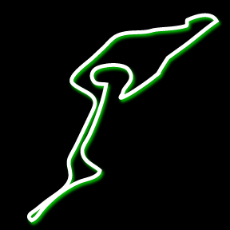
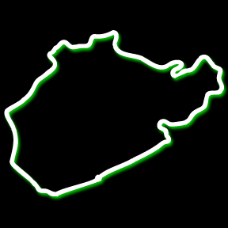

Germany
Nurburgring
This exhilarating circuit exists as three different variations. The Nordschleife, which is the intimidating and historic 21 km section; the 5.1 km Grand Prix Circuit or GP Strecke and the 24 hour endurance circuit which is a combination of both the Nordschleife and GP Strecke.
GP Strecke
The Grand Prix Strecke project was tasked with bringing Formula 1 back to the Nürburgring. In 1984, the old southern section or ‘Sudschleife’ of the original Nurburgring was removed and replaced with a new circuit. It was safe as it met the highest safety standards, but its turns were designed with protractors and mathematical equations where the Nordschleife allowed the terrain to define it, giving it character and challenging both driver and car alike.
The circuit’s geometrically correct corners made it tough to pass so it was tweaked in 2002. A first-gear hair-pin was added that put an emphasis on braking and car control, inviting racers to out-brake each other and either reap the benefit or pay the price.

The German GP is shared between the Nurburgring and Hockenheim. The Nurburgring also hosts 24 Hours of Nürburgring, 1000km Nürburgring, DTM series, and numerous endurance series events.
Nordschleife
The Nordschleife also known as the ‘Ring’ or ‘Northern loop’ was built in the 1920s around the village and medieval castle of Nürburg in the Eifel mountains. It is located about 70 km south of Cologne, and 120 km northwest of Frankfurt. It was nicknamed ‘The Green Hell’ by Jackie Stewart and is widely considered to be the toughest, most dangerous, and most demanding purpose-built racing circuit in the world.
The Ring consists of 73 turns and features sweeping curves, bumpy/variable surfaces, rapidly changing weather, dramatic climbs and drops, and a straight the length of about 1.7 km where terminal speeds can be reached. Usually, the sun shines on one half of the course while it rains on the other and the overgrowing leafy green trees of the Eifel hang over the track in some parts, making it dark and slippery. It is truly the Green hell!

The track was originally built to host the German Grand Prix and for German automotive engineers to test their vehicles. Over the years it went through a series of changes to meet Formula 1 safety requirements and demands of the drivers. However, 1976 was the year that Formula 1 racing ended at the Nordschleife, after Niki Lauder crashed his Ferrari and was badly burnt during the race. This resulted in the German Grand Prix being moved to the Hockenheim circuit in the years to follow.
Today, the Ring is used as a benchmark for automotive manufacturers such as Pagani, Ferrari, BMW, Porsche and many others. Several Touring Car series are still held at the Nordschleife and the circuit is also open for the public to experience!
Regardless of your driving ability, you haven’t tested yourself until you’ve driven on the Green Hell. It must be driven to be believed!
Check out Tours to book a trackday on this amazing circuit!
Back to the Home page or view the Next Track >>